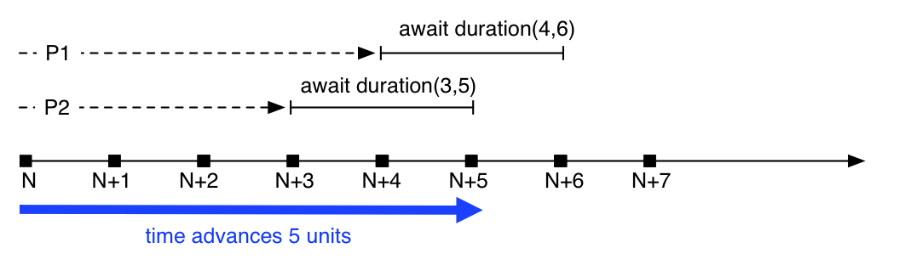

Timed ABS¶
Timed ABS is an extension to the core ABS language that introduces a notion of abstract time. Timed ABS can be used to model not only the functional behavior but also the timing-related behavior of real systems running on real hardware. In contrast to real systems, time in an ABS model does not advance by itself. The time model of Timed ABS takes inspiration from formalisms such as Timed Automata and Real-Time Maude.
The ABS notion of time is dense time with run-to-completion semantics. Timed ABS adds a clock to the language semantics that advances in response to certain language constructs. Time is expressed as a rational number, so the clock can advance in infinitesimally small steps.
Note
All untimed ABS models are valid in Timed ABS. An ABS model that contains no time-influencing statements will run without influencing the clock and will finish at time zero.
It is possible to assign deadlines to method calls. Deadlines are expressed
in terms of a duration value relative to the current time and decrease as the
clock advances. The current deadline of a method is available via the
function deadline and decreases down to zero.
Semantics of time advancement¶
Time only advances when all processes are blocked or suspended and no process is ready to run. This means that for time to advance, all processes are in one of the following states:
the process is awaiting for a guard that is not enabled (see Await (statement))
the process is blocked on a future that is not available (see Get)
the process is suspended waiting for time to advance
the process is waiting for some resources
In practice this means that all processes run as long as there is “work to be done.”
The simulated clock advances such that it makes the least amount of “jumps” without missing any point of interest. This means that when a process waits or blocks for an interval (min, max), the clock will not advance more than max, since otherwise it would miss unblocking the process. On the other hand, the clock will advance by the highest amount allowed by the model. This means that if only one process waits for (min, max), the clock will advance by max.

Big-step time advance¶
Figure Big-step time advance shows a timeline with two process,
P1 and P2. At time \(N\), both suspend themselves waiting
for time advance: P1 waits for \(4-6\) time units, P2
waits for \(3-5\) units, respectively. Assuming that no other
process is ready to run, the clock will advance the maximum amount
that still hits the earliest interval, in this case 5. Since the
clock is now within both requested intervals, both processes are
unblocked and ready to run.
Datatypes and constructors¶
Time is expressed as a datatype Time, durations are expressed
using the datatype Duration, which can be infinite. These
datatypes are defined in the standard library as follows:
data Time = Time(Rat timeValue);
data Duration = Duration(Rat durationValue) | InfDuration;
Functions¶
now¶
The function now always returns the current time:
def Time now()
=> Time(0)
Note that since ABS uses simulated time, two calls to now can
return the same value. Specifically, the result of now() changes
only by executing duration or await duration statements, or by
waiting for resources to become available:
Time t1 = now();
Int i = pow(2, 50);
Time t2 = now();
assert (t1 == t2); ①
deadline¶
The function deadline returns the deadline of the current process:
def Duration deadline()
=> InfDuration
The initial value of a deadline is set via a Deadline annotation
at the caller site:
Unit m() {
[Deadline: Duration(10)] this!n(); ①
}
Unit n() {
Duration d1 = deadline(); ②
await duration(2, 2);
Duration d2 = deadline(); ③
}
Deadline annotation assigns a deadline to the process
started by the asynchronous method calldeadline returns InfDurationd2 will be two time units less than d1timeValue¶
The function timeValue returns the value of its argument as a rational number:
def Rat timeValue(Time t);
timeDifference¶
The function timeDifference returns the absolute value of the
difference between its two arguments, i.e., a value greater or equal
to 0:
def Rat timeDifference(Time t1, Time t2);
timeLessThan¶
The function timeLessThan returns True if the value of its first argument
is less than the value of its second argument:
def Bool timeLessThan(Time t1, Time t2);
durationValue¶
The function durationValue returns the value of its argument as a
rational number:
def Rat durationValue(Duration t);
isDurationInfinite¶
The function isDurationInfinite returns True if its argument
is InfDuration, False if its argument is Duration(x) for
some value x:
def Bool isDurationInfinite(Duration d);
addDuration¶
The function addDuration adds a duration to a time, returning a
new value of type Time. It is an error to pass InfDuration as
an argument to this function.
def Time addDuration(Time t, Duration d);
subtractDuration¶
The function subtractDuration subtracts a duration from a time,
returning a new value of type Time. It is an error to pass
InfDuration as an argument to this function.
def Time subtractDuration(Time t, Duration d);
durationLessThan¶
The function durationLessThan returns True if the value of its
first argument is less than the value of its second argument. In case
both arguments are InfDuration, durationLessThan returns
False.
def Bool durationLessThan(Duration d1, Duration d2);
subtractFromDuration¶
The function subtractFromDuration subtracts a value v from a
duration, returning a new value of type Duration. In case its
first argument is InfDuration, the result will also be
InfDuration.
def Duration subtractFromDuration(Duration d, Rat v);
Statements¶
Timed ABS introduces one statements and adds one additional guard to
the await statement, as described in this section.
The difference between duration and await duration is that in the latter
case other processes in the same cog can execute while the awaiting process is
suspended. In the case of the blocking duration statement, no other process
in the same cog can execute. Note that processes in other cogs are not
influenced by duration or await duration, except when they attempt to
synchronize with that process.
duration¶
The duration(min, max) statement blocks the cog of the executing
process until at least min and at most max time units have
passed. The second argument to the duration statement can be
omitted; duration(x) is interpreted the same as duration(x,
x).
DurationStmt ::= |
|
Example:
Time t = now();
duration(1/2, 5); ①
Time t2 = now(); ②
t2 will be between 1/2 and 5 time units larger than tawait duration¶
The duration(min, max) guard for the await statement (see
Await (statement)) suspends the current process until at least min
and at most max time units have passed. The second argument to
the duration guard can be omitted; await duration(x) is
interpreted the same as await duration(x, x).
AwaitStmt ::= |
|
Guard ::= |
… | DurationGuard |
DurationGuard ::= |
|
Note
A subtle difference between duration and await
duration is that in the latter case, the suspended process
becomes eligible for scheduling after the specified time,
but there is no guarantee that it will actually be scheduled
at that point. This means that more time might pass than
expressed in the await duration guard!
Example:
Time t = now();
await duration(1/2, 5); ①
Time t2 = now(); ②
t2 will be at least 1/2 time units larger than tTimed ABS and the model API¶
By default, the clock will advance when all processes within the model are waiting for the clock. However, it is sometimes desirable to synchronize the internal clock with some external event or system, and therefore to temporarily block it from advancing beyond a certain value.
When a model is started with the a parameter -l x or
--clock-limit x, the clock is stopped at the given value x.
This makes it possible to model infinite systems up to a certain clock
value. When the clock limit is reached, the model will terminate even
if there are processes which would be enabled by further clock
advancement.
When starting a model with both the -l and -p parameters
(i.e., with both the model api and a clock limit), a request to the
model api of the form /clock/advance?by=x will increase the clock
limit by x, thereby causing waiting processes to run until the new
limit is reached.